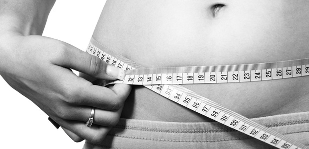

前にもこのブログで触れましたが、（⇒ダイエットはじめました）昨年の5月くらいから本格的にダイエットをしていました。年も30代の半ばにさしかかり、中年太りがエスカレートしていたのに気づいて愕然としたのが切っ掛けですが、いつしか体重の数値が減っていくことが喜びとなり、気がつけばここ20年の最軽量にまで落ち着きました。服のサイズも、LサイズからSサイズへ。ブランドによってはXSも視野に入るまでに激変。服の買い直しはうれしい悲鳴です。
さて、ダイエットをしていると、うれしいこともたくさんある反面、つらいこともあります。その一つは「とにかく寒い！」。特に手足が冷えます。去年は何とも感じなかったのに、今年はひたすら「寒い寒い」と連呼している状況です。痩せると寒さが身にしみるというのは話には聞いていたものの、実際に体験してみると想像以上にしんどいものですね。夏の暑さも嫌ですが、寒さは生命の危機を感じさせます。
実はダイエットは文明的な営みだった？
そう考えてみると、ダイエットというのはかなり「文明的な」営みであることに気付きます。現代ほど食料が豊富には存在しなかった時代、そもそもダイエットをする必要がある人間はほとんどいませんでした。日常的に人々は飢え、飢えは死に直結し、最も忌み嫌われるものでした。ですから、自分から進んで擬似的な「飢え」の状態を作り出すなど考えも及ばなかったことでしょう。さらに、防寒手段の乏しい時代においては寒さもまた死に直結します。この「飢え」と「寒さ」という二つの生命の危機を自ら引き寄せるなど狂気の沙汰だと思われるかも知れません。
私も含めて現代人は健康を気にします。太りすぎは成人病のもとだと盛んに報じられ、それが常識として流布しています。また、美的な観点からもスリムであることが求められます。カッコいい服を着たければまず痩せなければなりません。美と健康のためならば飢えと寒さにも耐える。この状況において「美」も「健康」も自然なものではありえません。かなり人工的に、観念的に作り出されたものであるが故に、一般的にこのような人為的な「美」や「健康」は批判の対象になり、大学入試の現代文でもそのような内容がよく出題されます。しかし、それはある意味では私たち人類が築き上げてきた文明の最先端でもあります。自然の状態から抜けだし、周囲の世界を自分たちが行きやすいように変えてきたのが我々の文明です。そして最終的に、人間はその最も根本的な「身体」にも人工的に手を加えようと考えます。本能的に忌避される飢えや寒さをあえて求めるという「自然」とは言いがたい価値観に従って身体を変容させるのは、すごく人為的ですね。
ダイエット中、好物のラーメンをぐっと我慢しながらそんなことを考えました。おなかが減ったら小難しいことを考えるに限ります。これが私がダイエットに成功した理由かも知れません。